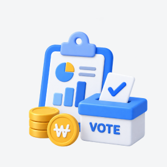

참여예산제도 소개
주민참여예산제도란?
행정안전부의 제도적 지원 아래 각 지방자치단체는 재정운용의 비효율성을 극복하고, 지방예산의 책임성 및 행정의 투명성 제고하기위해 주민참여예산제도를 운영하고 있습니다. 예산 편성 등 예산과정에 주민이 직접 참여하는 제도로 지역별 특색에 따라 다양하게 운영되고 있습니다.
주민참여예산제도에는 주민참여예산위원회와 주민총회 등에 직접 참여하여 제안사업을 검토하고 예산편성 과정에 의견을 제시할 수 있습니다.
그리고 각 지방자치단체의 주민참여예산 홈페이지를 통해 정기·수시로 온라인 투표에 참여할 수 있습니다.
추진 배경 및 방향
추진목적
예산편성과정에 주민 직접 참여 → 예산낭비・재정운용의 비효율성 극복, 지방예산의 책임성・행정의 투명성 제고
추진방향
- 예산편성 과정에 주민들이 직접 참여하는 재정민주주의 실현
- 다양한 주민의견 수렴 및 의견반영
- 예산편성 과정 및 결과 공개로 투명한 예산관리 및 주민의 알권리 충족
법적근거
지방재정법 제39조(지방예산 편성 과정의 주민 참여), 같은 법 시행령 제46조
운영기구 및 주민참여예산제도 운영조례
주민참여예산제도 참여방법
- 사업공모
-

참여예산 투표 - 설문조사
- 공청회
- 토론회
- 직접참여 : 각 지방자치단체는 관련 조례에 따라 주민참여예산위원회와 주민총회 등을 운영하며, 이를 통해 직접 참여할 수 있습니다
- 온라인참여 : 온라인을 통해 정기, 수시로 사업제안신청 및 선정을 위한 투표에 참여할 수 있습니다.